Текст задания: Создать папку в ФС NTFS и вложить в нее несколько файлов. Установить права доступа на папку. Какие права получили вложенные файлы? Как изменить эти права?
Ответ: Файлы наследуют ACL папки (в icacls отмечено «(I)»). Изменение — «Свойства → Безопасность» или icacls /grant, /inheritance:r.
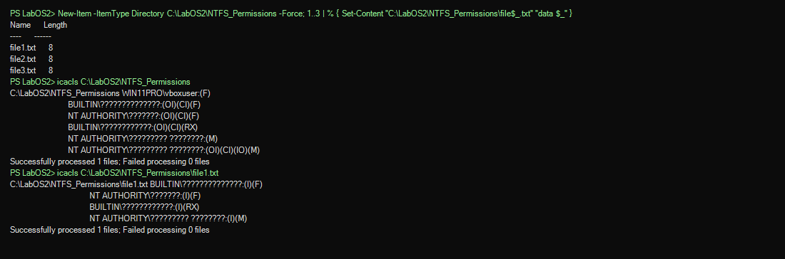
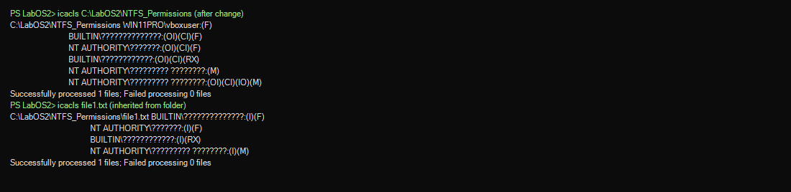
Текст задания: Установите специальные разрешения для папки. Какую область действия можно задать для этих разрешений?
Ответ: «Только эта папка», «вложенные папки и файлы», «только файлы» и т.д.; в icacls — (OI), (CI), (IO), (NP).
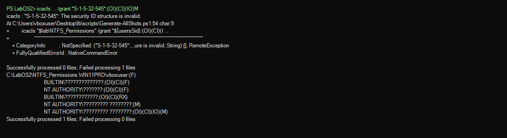
Текст задания: Если разрешения назначены пользователю лично и как члену группы — какие итоговые разрешения? Как действуют запреты?
Ответ: Эффективные права складываются; явный Deny блокирует соответствующее действие даже при наличии Allow.
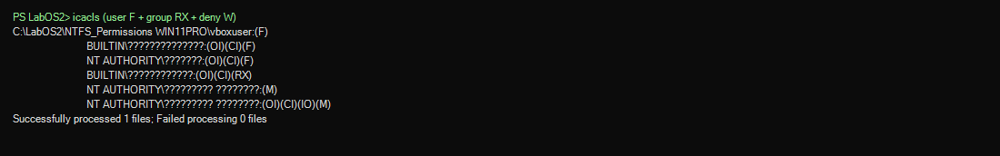
Текст задания: Кто является владельцем файла? Как и кому можно передать владение файлом?
Ответ: Владелец — создатель (WIN11PRO\vboxuser). Передача: «Безопасность → Дополнительно → Владелец» или takeown.
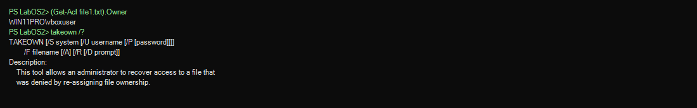
Текст задания: Изучите ICACLS: создать файл, сохранить разрешения, выдать чтение одному пользователю и запретить запись другому.
Ответ: Базовые ACE унаследованы; дополнительные задаются icacls (/grant, /deny, /save).
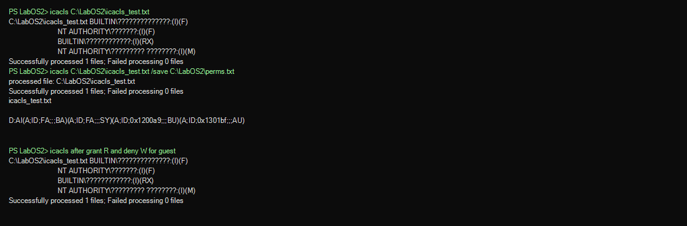
Текст задания: Передать владение файлом (графический интерфейс и командная строка).
Ответ: CLI: takeown /f путь, icacls /setowner. GUI: вкладка «Владелец» в дополнительных параметрах безопасности.
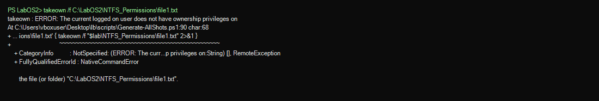
Текст задания: Установите квоты дискового пространства для разных пользователей.
Ответ: Квоты включаются командой fsutil quota track C:. Просмотр — fsutil quota query C: (использование по пользователям/SID).
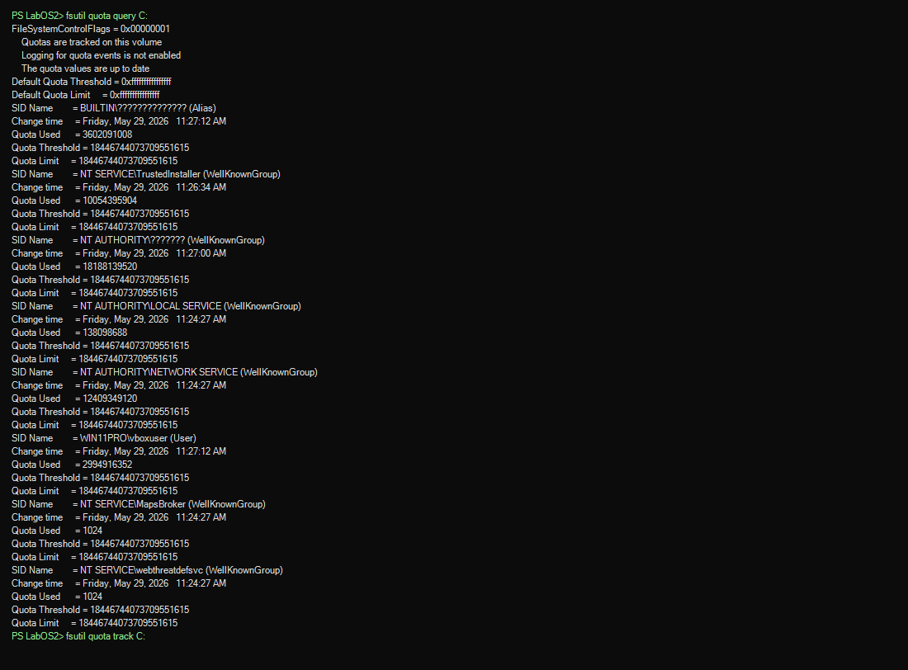
Текст задания: Сожмите папку (командная строка и GUI). Включите отображение сжатых файлов другим цветом.
Ответ: CLI: compact /C /S. GUI: «Сжать содержимое» в дополнительных атрибутах. Цвет: ShowCompressColor=1.
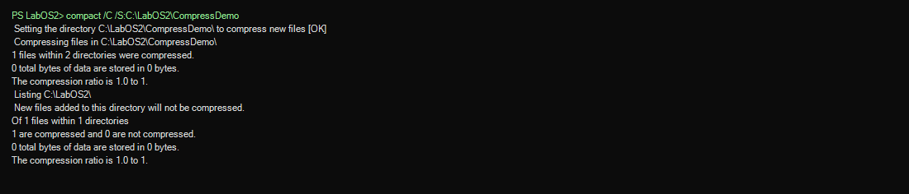
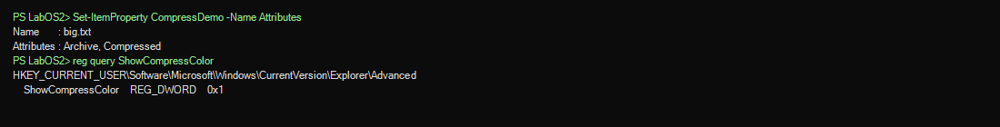
Текст задания: Шифрование EFS, сертификат, сохранение сертификата.
Ответ: cipher /E создаёт сертификат EFS; резервная копия — certutil -exportPFX.
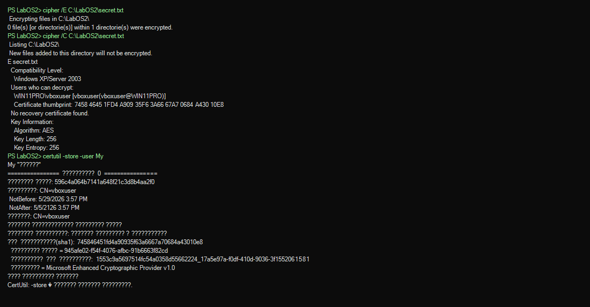
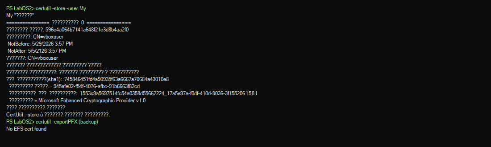
Текст задания: Символические и жёсткие ссылки, точка подключения (junction).
Ответ: Hard link — тот же MFT-запись; symlink — путь; junction — reparse point каталога на локальный путь.
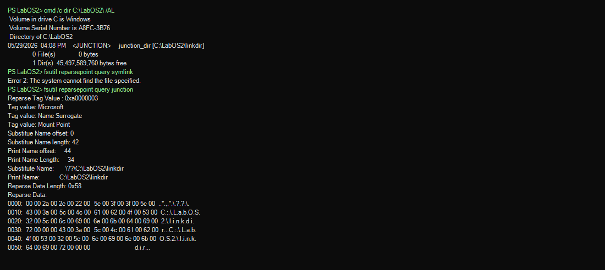
Текст задания: Монтирование тома на папку NTFS.
Ответ: mountvol папка \\?\Volume{GUID}\; требуются права администратора.
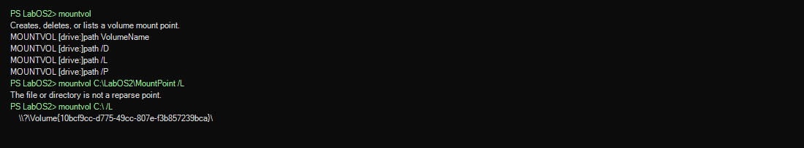
Текст задания: Именованные потоки NTFS.
Ответ: Основной поток и именованный :AltStream сосуществуют в одном файле.
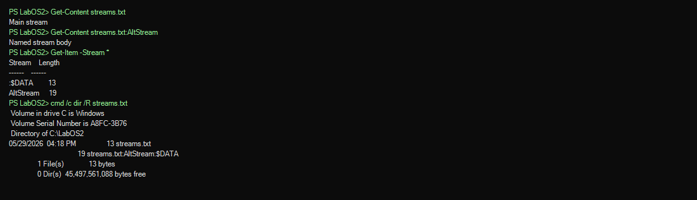
Текст задания: Запрет доступа и аудит попыток.
Ответ: Запрет через icacls /deny; аудит — SACL + auditpol, события в журнале «Безопасность».
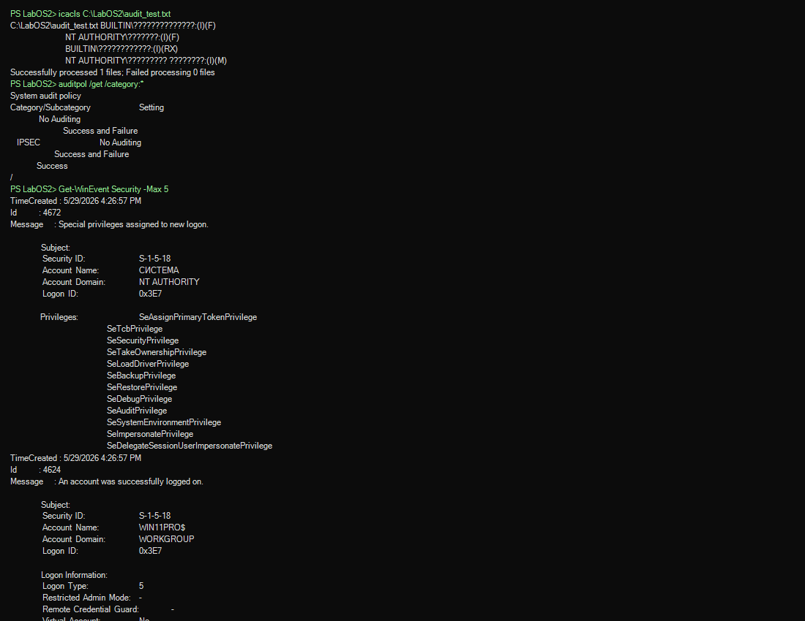
Текст задания: Сервис дефрагментации, фрагментация дисков.
Ответ: Служба defragsvc; анализ — defrag C: /A или Optimize-Volume.
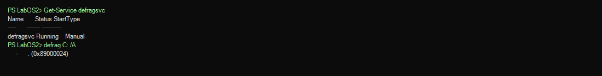
Текст задания: Изучите состав домена, в который входит компьютер.
Ответ: Компьютер не в домене AD, рабочая группа WORKGROUP.
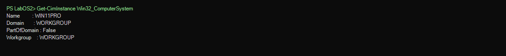
Текст задания: Запустите оснастку «Общие папки».
Ответ: Команда fssm.msc или MMC с модулем fssm.
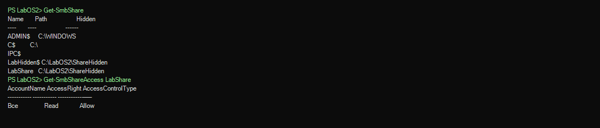
Текст задания: Выделить папку в общий доступ; скрытый ресурс; сетевые и локальные разрешения.
Ответ: Скрытый ресурс — имя с «$» (LabHidden$). В net view виден только LabShare; скрытый ресурс доступен по полному пути. Итоговый доступ — наиболее строгий из NTFS и share.
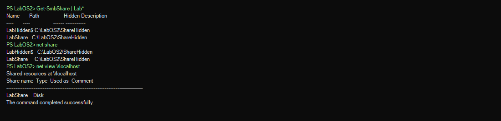
Текст задания: Подключить сетевую папку как локальный диск (в т.ч. скрытый ресурс).
Ответ: net use Z: \\localhost\LabHidden$ — подключение скрытого ресурса по полному имени.
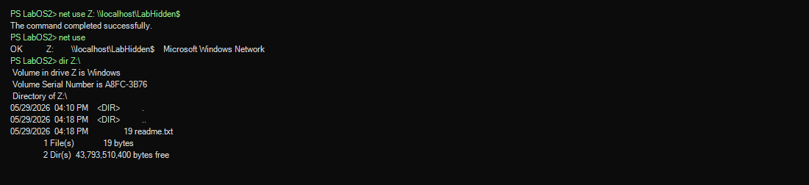
Текст задания: Автономные файлы и методы синхронизации.
Ответ: Служба CscService; синхронизация при входе, по расписанию, вручную из центра синхронизации.
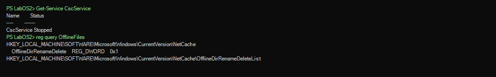
Текст задания: Создать своё расширение (.lb2); EncryptionContextMenu.
Ответ: Зарегистрирован тип lb2file; EncryptionContextMenu=1 в HKCU\...\Explorer\Advanced.
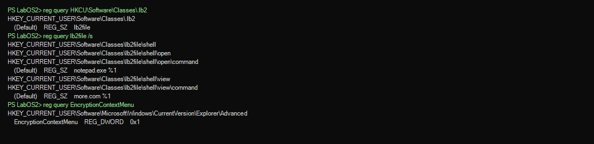
Текст задания: Подразделы Run и RunOnce — для чего используются?
Ответ: Автозапуск программ при загрузке ОС и входе пользователя.
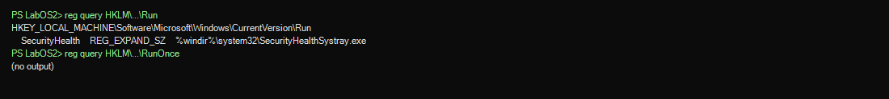
Текст задания: REG-файл, импорт, изменение команды обработки.
Ответ: Формат: Windows Registry Editor Version 5.00, [раздел], "имя"=тип:значение.
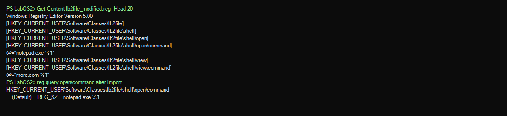
Текст задания: ASSOC и FTYPE.
Ответ: assoc связывает расширение с ProgID; ftype задаёт команду открытия для ProgID.
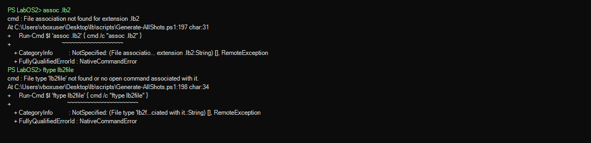